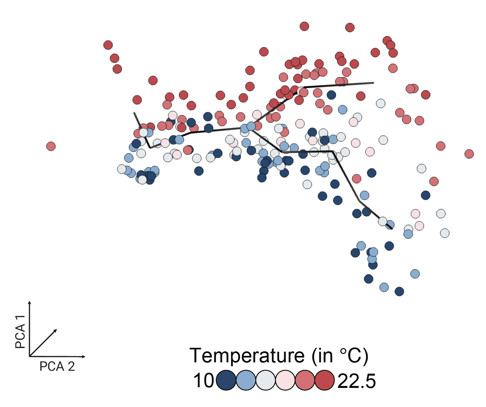
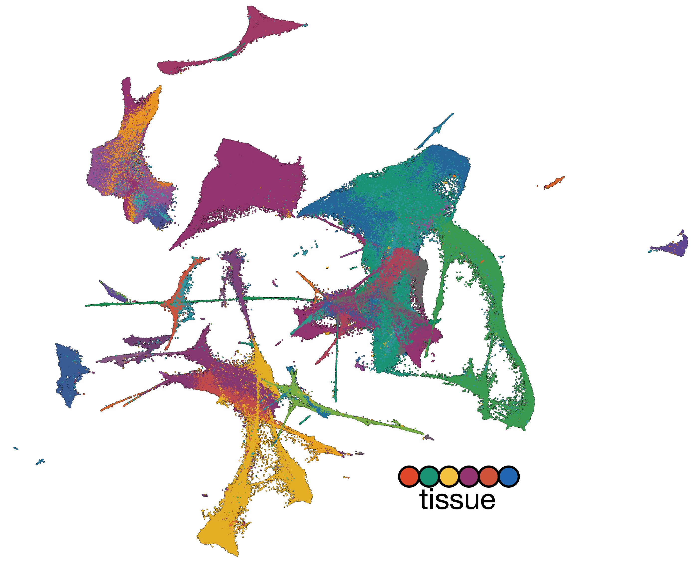
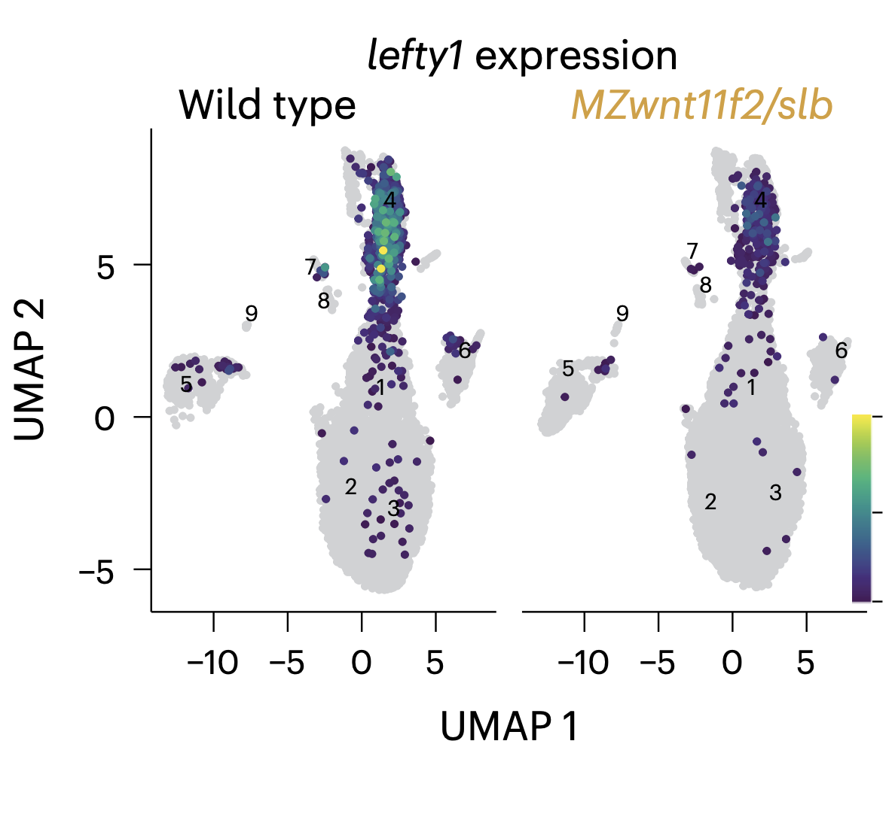
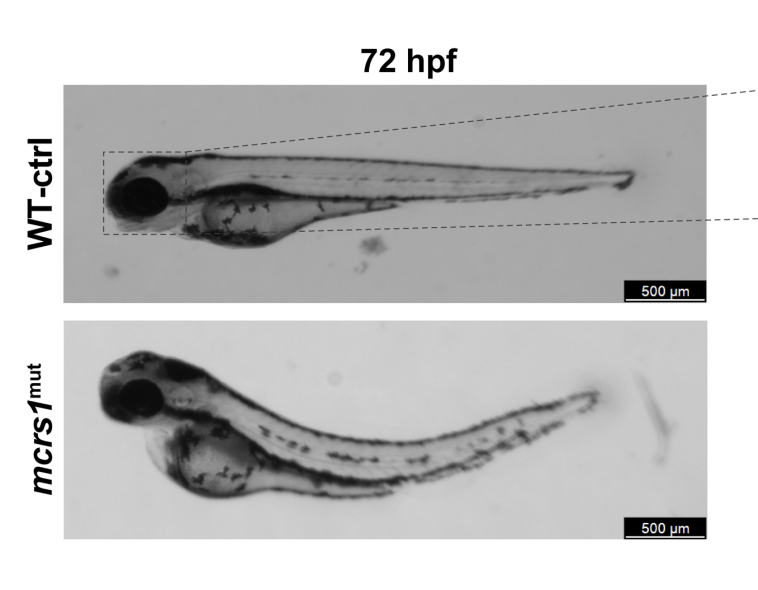
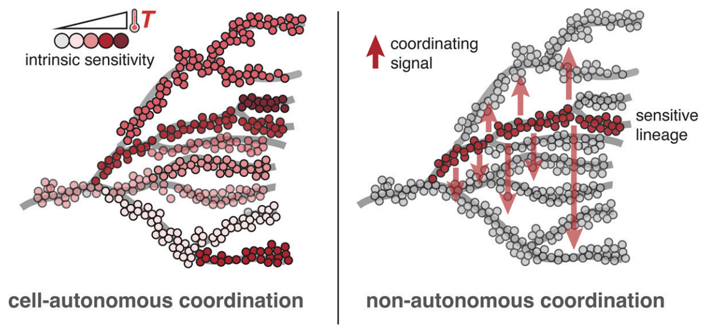

Publications
2026

Life-cycle trajectory inference links temperature-gated progenitors to reproductive fate
bioRxiv. 2026.


2025

High-throughput single-cell CRISPRi screens stratify neurodevelopmental functions of schizophrenia-associated genes
bioRxiv. 2025.
2024

Degrees of freedom: temperature's influence on developmental rate
Current Opinion in Genetics & Development. 2024; 85:102155.
2023
2022
Dynamic chromatin accessibility deploys heterotypic cis/trans-acting factors driving stomatal cell-fate commitment
Nature Plants. 2022.
2021
The regulatory landscape of Arabidopsis thaliana roots at single-cell resolution
Nature Communications. 2021; 12(1):3334.
2020
Dimensionality reduction by UMAP to visualize physical and genetic interactions
Nature Communications. 2020; 11:1537.
Identification of plant enhancers and their constituent elements by STARR-seq in tobacco leaves
The Plant Cell. 2020; 32:2120-2131.
Binding and regulation of transcription by yeast Ste12 variants to drive mating and invasion phenotypes
Genetics. 2020; 214(2):397-407.
Transcriptional re-wiring by mutation of the yeast Hsf1 oligomerization domain
bioRxiv. 2020.
2019
2018
Preferences in a trait decision determined by transcription factor variants
Proceedings of the National Academy of Sciences. 2018; 115:E7997-E8006.
Profiling of accessible chromatin regions across multiple plant species and cell types reveals common gene regulatory principles and new control modules
The Plant Cell. 2018; 30:15-36.
2017
Complex relationships between chromatin accessibility, sequence divergence, and gene expression in Arabidopsis thaliana
Molecular Biology and Evolution. 2017; 35:837-854.
2013
Identification of novel loci regulating interspecific variation in root morphology and cellular development in tomato
Plant Physiology. 2013; 162:755-768.